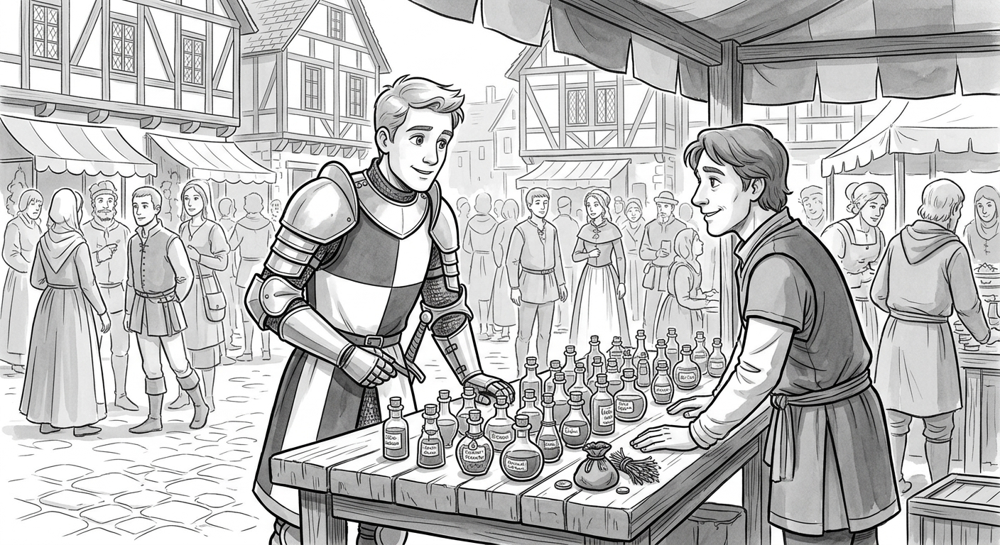
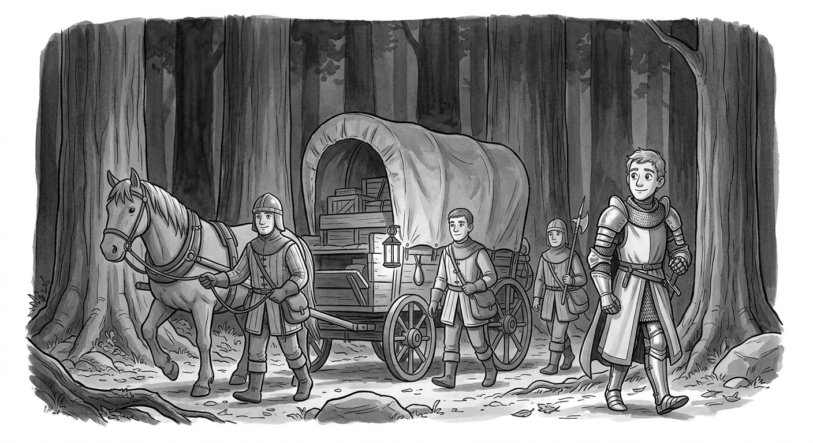
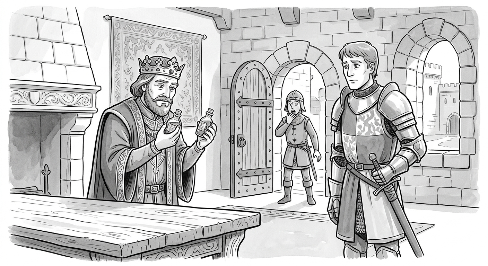

Olly Richards · Short Stories in English for Beginners · Story 3
How to use this page: the story has 3 chapters. Use the buttons at the bottom of the screen to change chapters. Words with a dotted gold line are new vocabulary. Tap or click a word to see the meaning and an example. Tap 🔈 to hear the word. Use A+ and A− to change the text size. Some words are review words from Week 1. Can you remember the meaning before you tap?
Chapter 1— Gold.

A long time ago, there was a large kingdom. It was full of interesting people, animals and things. One day, a knight came to the kingdom. He was dressed in all black and white. He looked very strong.
The knight came to the main town. He stopped in the market square. He wanted to purchase something. It was something very special.
The market square was very big. It was full of people. There were various products for sale. The knight walked slowly through the square. He went directly to a dark corner of the market. There he found a trader.
The trader had an unusual range of items. The knight looked at the products. ‘Hello, trader,’ he said.
‘Yes, sir?’
‘I seek a potion. Do you have any?’
‘Potion? No, we have no potion here. None.’
The knight looked the trader in the eye. Then he said, ‘I believe you know what I want.’
‘Oh, yes. Oh ... oh ... potion. Um ... What kind of potion?’
‘The potion for strength.’
The trader looked around him. Then he looked at the knight. ‘I don’t have any here. There is not much these days. The ... uh "item" I need to make it is hard to find.’ The trader paused and looked around again. Then he said, ‘I can make you some, but it will be at great cost.’
‘I have gold. I require two potions for strength. How long will it take?’
‘Come back this evening. They’ll be ready.’
The knight nodded and walked away.
The knight walked across the square. People looked at him. They did not know him. However, the knight was famous. He was an independent fighter. His name was Lars. Lars travelled from kingdom to kingdom. He fought many men. He often fought for kings.
Lars crossed a stone bridge. He arrived at the castle door. Then two guards stopped him.
‘Who are you?’ asked one of the guards.
‘My name is Lars. I want to see the king.’
‘You can’t. Now leave.’
Lars looked at the guard. He took a few steps back. He put his bag down. The bag contained many unusual items. Lars took an old scroll from the bag. He gave it to the guard.
‘Look at this scroll. It is from the king,’ said Lars.
The guard looked at the scroll. It looked official. It also had the king’s mark.
‘Fine,’ the guard said. ‘Come in.’
The knight moved forward. He walked into a large room and waited. The room was very big and beautiful. Several guards were there. They looked at the knight suspiciously. They wanted to know why he was there.
Soon, the king entered. His name was Andur. He was dressed completely in purple. Purple was the colour of kings. He wore gold around his arms and neck.
‘Are you Lars?’ King Andur asked.
‘I am,’ answered Lars. He held up the scroll. ‘I want to speak with you.’
‘Come with me,’ said the king.
King Andur and Lars went into a smaller room. Both men sat down. The king offered Lars a cold drink. Lars accepted.
‘Thank you for coming,’ the king said to Lars. ‘I see you received my message.’
‘Yes. I’ve also heard that you require help.’
‘What have you heard exactly?’
‘You need someone to carry a load of gold. It must go to your brother Arthuren. You need a man you can trust. I am that man.’
The king thought for several minutes. At last he said, ‘And why should I trust you?’
‘I have helped you before. I will not betray you now.’
‘War and gold are different things. And this is a lot of gold.’
‘I don’t need gold. I have gold.’
‘Then why are you here?’
‘I like to travel and discover new things.’
King Andur thought for a moment. He looked suspicious. Lars smiled. After a moment, the king said, ‘OK, Lars. Take the gold to my brother. I’ll tell my guards.’
‘Thank you, King Andur.’
‘Don’t thank me yet. First I must hear from Arthuren that the gold has arrived. Then you will get your own gold.’
Lars left the castle. He walked over to the guards. One of the guards called. ‘So, you are back! We’ve just heard. You are taking the gold to Arthuren’s kingdom?’
‘Yes.’
‘Well, good travels!’ the guard laughed. ‘There are many dangers on the road. You’ll never make it!’ The other guards laughed as well. Then the guard became serious. ‘Men,’ he called, ‘prepare the gold. It leaves tomorrow.’
It was now evening. The knight returned to the market square. He found the trader. ‘Do you have my potions?’ he asked.
‘Yes, here they are. It was not easy! And it was very costly. That will be six pieces of gold.’
The knight looked up in surprise. He gave the trader the gold. The trader handed him the potions. ‘Thank you, kind sir,’ said the trader. ‘Have a good day.’
The knight simply walked away.
The next day, three guards came to Lars. They were joining the knight on the journey. They carried weapons. They were prepared for a fight if needed.
The four men walked to the Northern Road. It led straight to Arthuren’s kingdom. At the road, the horses and the gold were waiting.
The main guard was named Alfred. He turned to Lars. ‘Are you ready?’ he asked.
‘Yes. We can go.’
‘Before we leave,’ said Alfred, ‘I must tell you something. We are the king’s top guards. We will protect you on the journey. But this gold is not your property. If you try to take it, we will kill you.’
‘That’s good to know,’ said Lars, smiling.
Alfred looked Lars directly in the eye. ‘It’s not funny. It’s true.’
‘I understand. Now let’s leave.’
The load of gold was in the back of a wagon. Lars looked at the bags and smiled. The horses began to move. Lars and the guards slowly began to walk.
Chapter 2— The journey.

Lars and the guards followed the Northern Road. Behind them came the horses and the wagon of gold. After some time, Alfred, the main guard, said, ‘Lars, what is along the way?’
‘It’s not an easy way. It’s very dangerous,’ replied Lars.
‘So, what will we do?’
‘Well, there are some dangerous men and animals on this road. I recommend that we stay away from them. We’ll try not to fight.’
‘Do you fight well, Lars?’
‘I’m well known for my skill. I can fight very well.’
‘I hope so,’ said Alfred. Three men carried on walking. Soon they came to a big stone bridge. It was similar to the bridge at King Andur’s castle.
‘Lars,’ said Alfred. ‘This bridge is very similar to the castle bridge.’
‘Yes. You built it a long time ago.’
‘I built it?’ said Alfred with surprise.
‘Well, not you. The people of your kingdom. They built it a long time ago. They built it for a reason. But I will not tell you that now.’
The men crossed the bridge. Then they walked into a big wood. It was full of trees. But there were no animals. In fact, it was silent.
‘Why are these woods so silent?’ Alfred asked.
‘We are in the Silent Woods. There aren’t any animals here,’ Lars replied.
‘Why not?’
‘A long time ago there was a great battle here. It was between King Andur and his brother.’
Alfred was young. He didn’t know about the battle. He thought that King Andur and King Arthuren trusted each other.
‘You look surprised, Alfred,’ said Lars.
‘I am,’ Alfred replied.
‘Why?’ asked Lars.
‘I thought the two brothers never fought.’
Lars laughed. ‘Oh, I see. Well, they did. But that was many years ago.’
Lars stopped talking. The men moved on.
The Silent Woods were very dark. The trees were tall. You could hardly see daylight.
Later, Alfred asked, ‘Do you know where we’re going, knight?’
‘Yes. I’ve been here before.’
‘When?’ asked Alfred.
‘A long time ago.’ Lars thought back. He remembered the fight between King Andur and King Arthuren. It was one of the biggest battles in history. Before it, the woods were called the Animal Woods. But after the battle, they became the Silent Woods.
Lars continued talking. ‘When I was younger, I fought for King Andur. I was in the battle in these woods.’
‘What was the battle for?’
‘King Andur started it.’
‘And why did he fight his brother?’
‘King Andur wanted a fountain in the woods.’
Lars walked in silence for several minutes. Alfred stayed silent, but he was thinking. He wanted to know more about the great battle. He had always thought that King Andur was a peaceful king.
‘Can I ask you something, Lars?’
‘Yes.’
‘What kind of fountain is it exactly?’
‘Wait and see,’ was all Lars said.
Lars and Alfred were silent for an hour. The other guards talked softly at times. There were only trees and silence - nothing more. At last the group came to a lake. ‘We’ve arrived,’ the knight said.
‘What is this?’
‘A long time ago, this lake was a fountain.’
‘The fountain from the battle?’
‘Yes.’
The guards and the knight walked to the lake. Lars finally spoke. ‘A long time ago, there was a fountain here. There wasn’t much water. Nothing like this. But the original water was magic. If you drank the water, it gave you special powers.’
‘What type of powers?’ asked one of the guards.
‘If a person drank the water, he or she became very strong.’
Alfred cupped his hands. He drank some of the water.
‘It tastes normal,’ he said.
‘Of course,’ said Lars. ‘It’s normal water now. It was magic a long time ago.’
Alfred dried his hands and asked, ‘So, what happened? Why isn’t the water magic now?’
Lars looked at him and began to tell the story. ‘Both Andur and Arthuren wanted power. They would do anything for it. One day they heard about a magic fountain. A fountain that made people strong. Immediately, both kings wanted it. They raced to the woods. When they met at the fountain, the fighting started.’
‘What did they do?’ asked Alfred.
‘Both kings called in their soldiers. The battle went on for days, weeks and then months. It was an ugly scene. During the battle, the men drank as much water as they could. They wanted to be strong to win. They let their horses roll in it. They walked through it. They bathed in it. They took all the water. Soon the water became foul. It could no longer be used.’
He looked at the guards. ‘After some time, the fountain dried up. The rains came and created the lake. But it was not magic water.’
Alfred looked at him. ‘So that was the end of the magic water?’
‘Not quite,’ replied Lars. He gave Alfred a serious look. ‘Arthuren had a small amount of magic water saved. And he knew a secret. You can make magic water. You need to have some of the original magic water and time, but it’s possible.’
‘So that’s the secret...’ began Alfred.
‘Well, that’s part of the secret. Come now. Let’s leave these woods.’
The group continued on their way. Soon, they left the woods. The sun was out. The trees weren’t as tall. They had a beautiful view of the countryside.
‘Where are we?’ asked Alfred.
‘We’re nearly at Arthuren’s castle. It’s good that we didn’t run into any dangers.’
Alfred looked at him. ‘Are there really dangers in those woods?’
Lars looked back. ‘Yes. Why do you think we travelled in the day? They mostly come out at night.’
‘Why didn’t you tell me?’
‘I didn’t think you would come,’ said Lars. He laughed. Then he said, ‘OK, let’s go.’
The group could soon see a town. In it, there was a large castle. The guards had never been in another kingdom before.
‘Is this it?’ asked Alfred.
‘Yes, this is the kingdom. And that is Arthuren’s castle. We are taking the gold there.’
Alfred paused. ‘Lars,’ he began, ‘there’s something I haven’t asked you ...’
‘What’s that?’
‘What’s this gold for? Is it a tax?’
‘King Andur lost the battle of the Silent Woods. So now he must pay his brother in gold every five years.’
‘Why does he pay? Can’t they make peace?’
‘They made peace. But Arthuren has something that King Andur doesn’t. Andur must buy it.’
Alfred looked at Lars in surprise. ‘What does Arthuren have?’
‘More magic water. Andur purchases it to keep his people happy. They use it to make strength potions. Like these two potions here.’ Lars took out the potions he had bought.
‘I have heard about the potions! Do they really work?’
‘They do,’ said Lars. He put the potions away and looked at Alfred. ‘But they only work if they are made from real magic water. Come now. It’s time to go.’
Chapter 3— The secret.

Lars, Alfred and the guards walked towards Arthuren’s castle.
‘How are we going to get into the castle?’ asked Alfred.
‘Through the front door,’ Lars said and laughed very hard. Then he gave Alfred a strange look. Alfred looked at him silently. Something feels wrong, thought Alfred.
The group walked through the countryside. There were trees and fields. The fields were covered in grass. On the way, they passed many farmers. The farmers lived outside the castle’s walls. They grew food to feed the kingdom.
One of the farmers saw the group. They were near his field. He stopped working and spoke to them. ‘Good afternoon, sir!’ the farmer said to Lars.
‘Good afternoon,’ Lars called back.
‘Where are you going?’
‘I’m going to the castle. We must see the king.’
The farmer’s wife came over. ‘Who are these men?’ she whispered to her husband. Her husband didn’t answer.
Soon the farmer asked, ‘Who are you? I see your horses are carrying a load.’
‘King Andur sent us. He has given us an important task.’
The farmer was silent. Then he spoke, ‘I hope nothing bad has happened?’ He looked at Lars with concern.
‘No, don’t worry,’ Lars replied with a smile. ‘Everything is fine.’
‘Well. Have a good journey then,’ said the farmer. He went back to work.
The group continued walking across the fields. Alfred turned to the knight, ‘It seemed like they were frightened,’ he commented.
‘They were.’
‘But why?’
‘Because there is a secret. Only people in this kingdom know. And they want to keep it safe.’
‘And what is it? Is it something dangerous?’
Lars didn’t answer.
Soon, the men came to a big stone bridge. It was near the castle. Again, it was similar to the bridge at King Andur’s castle bridge. Two guards were on the bridge. One of them came over. He looked at Alfred, ‘Are you King Andur’s men?’
‘Yes. I represent the king,’ answered Alfred. Then he indicated Lars. ‘This knight kept us safe during the journey. The other two guards are with us.’
The guard looked at the wagon. Then he asked, ‘Is that the gold?’
‘Yes,’ replied Lars, ‘it’s the gold.’
‘OK,’ said the guard, ‘you may pass.’
Alfred looked at Lars in surprise. Lars seems to know the kingdom of Arthuren very well, Alfred thought.
The guard gave a sign to open the door. Another guard stood by the door as they entered. They walked into the castle’s market square. There were lots of people. Many of them were market traders. Others were farmers.
The group walked across the square. Suddenly, Alfred looked puzzled. ‘I know this place,’ he said.
‘It’s similar to the market square in King Andur’s castle,’ said Lars.
‘Yes, it’s almost identical!’
‘A long time ago, the two kingdoms were joined,’ explained Lars. ‘That’s why they are so similar. But that was before the great battle. Now they have no social contact. The people of the two kingdoms don’t like each other at all.’
The horses and wagon neared the castle doors. The castle itself was also very similar to King Andur’s. In fact, the structure was exactly the same.
Two guards went to unload the gold. Lars and Alfred went to see King Arthuren. They entered the king’s rooms.
King Arthuren called out, ‘Welcome to my kingdom!’
‘Good afternoon, Your Majesty,’ replied Lars.
‘Lars, it’s really you! I’m so happy to see you.’
‘I’m happy to see you, too, Your Majesty.’
Alfred didn’t understand at all. How did Lars and the king know each other?
‘Have you brought the gold, Lars?’
‘Yes, it’s yours.’
‘Excellent. We can start our plan.’
Alfred looked surprised. What plan is that? he thought.
Lars took out the strength potions. He had brought them from King Andur’s kingdom. He gave them to King Arthuren. Arthuren carefully measured the amounts.
‘What is happening?’ Alfred asked.
Lars and Arthuren looked at each other. Then Lars spoke. ‘I must tell you something, Alfred,’ he began.
Alfred took a few steps back. He was frightened. How did the king and Lars know each other? Why did Lars buy those strength potions? King Arthuren had magic water. He could make them himself!
Lars walked over. ‘Alfred,’ he began again, ‘this kingdom ran out of magic water a long time ago.’
‘What? Does King Andur know?’
‘No, he doesn’t.’
‘But we must tell him!’ Lars just looked at Alfred. Alfred became suspicious. ‘Why did you give the strength potions to this king? It is an act against King Andur!’
‘These are some of the last potions for strength. There is no more magic water. Do you understand?’
Alfred nodded.
Lars continued, ‘We might be able to make more magic water. We will use these potions instead of original water.’ Then Lars added, ‘We have always used original water. But this might work. We hope.’
Alfred was angry. ‘We have paid the gold for nothing? You betrayed me, Lars!’ he cried. ‘You betrayed King Andur!’
‘Yes, I lied. But I did it to maintain peace,’ said Lars. ‘I want no blood on my hands.’ He looked at Alfred and hoped he would understand.
‘How will this keep peace?’ replied Alfred. ‘The secret is that there is no more magic water. No one knows now. But soon people will find out. Then Andur will know you stole the gold.’
Lars stopped smiling. ‘Alfred, King Andur cannot find out that there’s no magic water. The result will be war. Peace will be over. King Andur will attack Arthuren.’
‘So you will make magic water for Andur with the potions?’ asked Alfred.
‘Yes. Just to keep the peace,’ Lars said. ‘If we can.’
Alfred looked at Lars suspiciously again. The comment worried him. ‘What do you mean "if we can"?’
Lars looked at Alfred. Then he spoke slowly. ‘As I said, we usually make new magic water with pure magic water. We mix magic water with normal water. The normal water becomes magic.’ Then Lars paused. ‘But there is no more pure magic water. The original water is gone.’
‘And?’
‘Well, we will try.’
‘Try what?’
‘We will try to make magic water from these potions. The potions have the magic water in them. We will mix the potions with normal water. Maybe it will make the normal water become magic.’
‘Maybe? Maybe?’ cried Alfred. ‘And what if it doesn’t? As you said, there is no more magic water ...’
Lars was silent. After a moment, King Arthuren answered. ‘If the potion does not work,’ he explained, ‘then the battle at the Silent Woods was not the last one.’